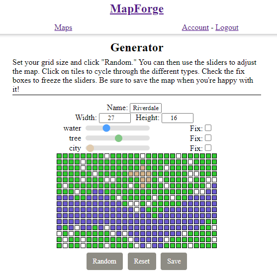

Hi! I'm Grey Nagle
About Me
Puzzles and problem-solving are major interests of mine, and
I love how well coding feeds those interests. Coming from an
engineering background, I've grown to deeply appreciate
coding's potential for rapid development cycles.
To
that end, I hope that I will be able to work with
other developers who share my passions so we can learn and
grow together.
In my downtime I enjoy winemaking, traveling the world, and cooking meals from the places I visit.
Here are some projects I've worked on:
-
MapForge
MapForge is a map generator for tabletop role-playing games intended for use by game masters. This app allows users to quickly generate randomized maps with different terrains and tweak them to their preferences. Users can save these maps for later use if they create an account.
I thought of the idea for this app as a result of my own time doing worldbuilding, where I found the act of creating maps to be distracting from my main goal of telling a story.This app is powered in the front-end by React & React Router, and in the back-end by NodeJS, Express, PostgreSQL, & Knex.js.
-
Streamline Factory Routing

Streamline is a factory simulator intended for use by those responsible for planning routes and allocating resources. Users first define components and machines to process those components, and then run tests that return processing times. Users can then refer to these values to make decisions about where there are inefficiencies in their current routings.
I thought of the idea for this app after hearing some coworkers discussing inefficiencies in some of our systems. They seemed like they needed a place to start, so I designed a diagnostic tool for the general case.This app is powered in the front-end by React & React Router, and in the back-end by NodeJS, Express, PostgreSQL, & Knex.js.
-
Isochrone

Isochrone is a general-use app that creates a map overlay showing the maximum range a user could reach from a location in a specified time.
I thought of the idea for this app when visiting a new city. I realized that I would like to explore the area during a break in my schedule and thought that it would be useful to have a visual representation of how far I could get in 30 minutes.This app is powered by HTML, CSS, Javascript & JQuery, and uses Google's Geocoding, Distance Matrix, and Maps APIs.
-
Quiz App

This is a small demo application for general use. This app poses the player several questions about the early history of the United States, tallying their score at the end.
This app was an assignment, so I thought I may as well incorporate my love of history and make a fun way for the user to learn some facts about the United State.This app is powered by HTML, CSS, Javascript & JQuery.